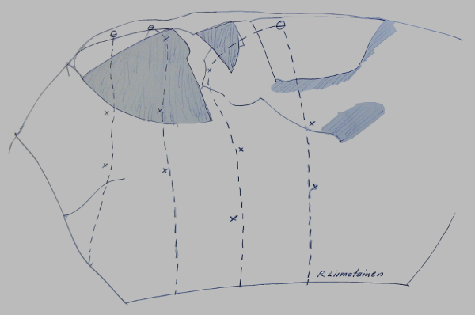
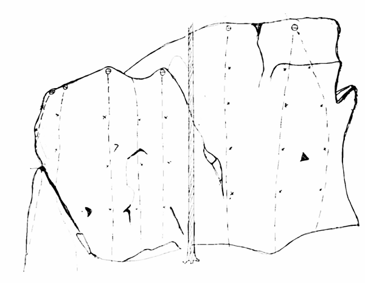

Tumbadelavalklippan
Lat: 59.201677
Long: 17.860427
Allmänt
Tumba - delaval (house of pain)
Vägbeskrivning
<div style="width: 355; float: right; margin-left: 10px; padding: 3px; border: solid 1px #cccccc;">
<googlemap width=350 height=300 lat="59.201677" lon="17.860427" zoom="14" type="map" controls="small">
59.201677,17.860427,
TumbaDeLaval
</googlemap>
</div>
<div style="float: right; margin-left: 10px;">
<slresa>
titel=TumbaDeLaval
lat=17860427
long=59201677
</slresa>
</div>
Leder
Kastrullocket

Huvudväggen
(OBS fel kan mycket väl finnas)
Från vänster till höger:
- 1
- Myran
- 6b
- Längst till vänster.Börjar med en boulder på plattan.
- 2
- Tumbaligan
- 7a
- VARNING: lös i början
- 4
- okänd2
- 7b?
- Går i dieder-sprickan. Lång, har en skruvkarbin på toppen.
- 5
- Jag kan också vara stark
- 7b/7c+?
- Börjar vid hornet, går rakt upp.
- 6
- Vilken vacker dag
- 8a
- Leden går rakt upp. Två-tre mycket hårda move i starten, sedan 6c.
- 7
- Ravi-1
- 8a
- Rakt upp, sedan till höger. Samma utsteg som "Vilken vacker dag"
- 8
- Ravi-2
- 8a+
- Börjar som Ravi-1. Går till höger ihop med "Vilken jävla dag"
- 9
- Ge dig iväg?
- 7c+?
- Hoppstart, sedan snett till vänster, samma utsteg som "Vilken vacker dag"
- 10
- Vilken jävla dag
- 8a
- Har en hoppstart. Går rakt upp.
- 11
- Speed-2
- 8a+
- Börjar till höger, går snett ihop till "Vilken jävla dag". Rakt upp.
- 12
- Speed-1
- 8a
- Börjar till höger, går snett ihop till "Vilken jävla dag". Fortsätter att snedda till vänster och går ut på "Ravi-1".
- 13
- projekt1
- ?
- Projekt som går till vänster om "Smärta"
- 14
- Smärta
- 8a
- Börjar med ett sidotag på överhänget, resning upp på hyllan.
- 15
- Kråkan?
- 6c
- Svatur, som möter en när man kommer till klippan. Ca 4 bultar.
Rasbranten
Hawaiiväggen
7-8 meter hög vägg 200m syd om huvudväggen.

- 0
- Aloha
- 7a
- 2bb+ankare, grep ovanför ankare avslutar leden
- 1
- Blue Hawaii
- 7a+
- 3bb+ankare, slutjuggen sitter förbi ankaret
- 3
- Hawaii
- 7b
- 3bb+ankare(slutar förbi ankaret)
kategori:sport
Kategori:Stockholm
Kategori:Västra Södertörn